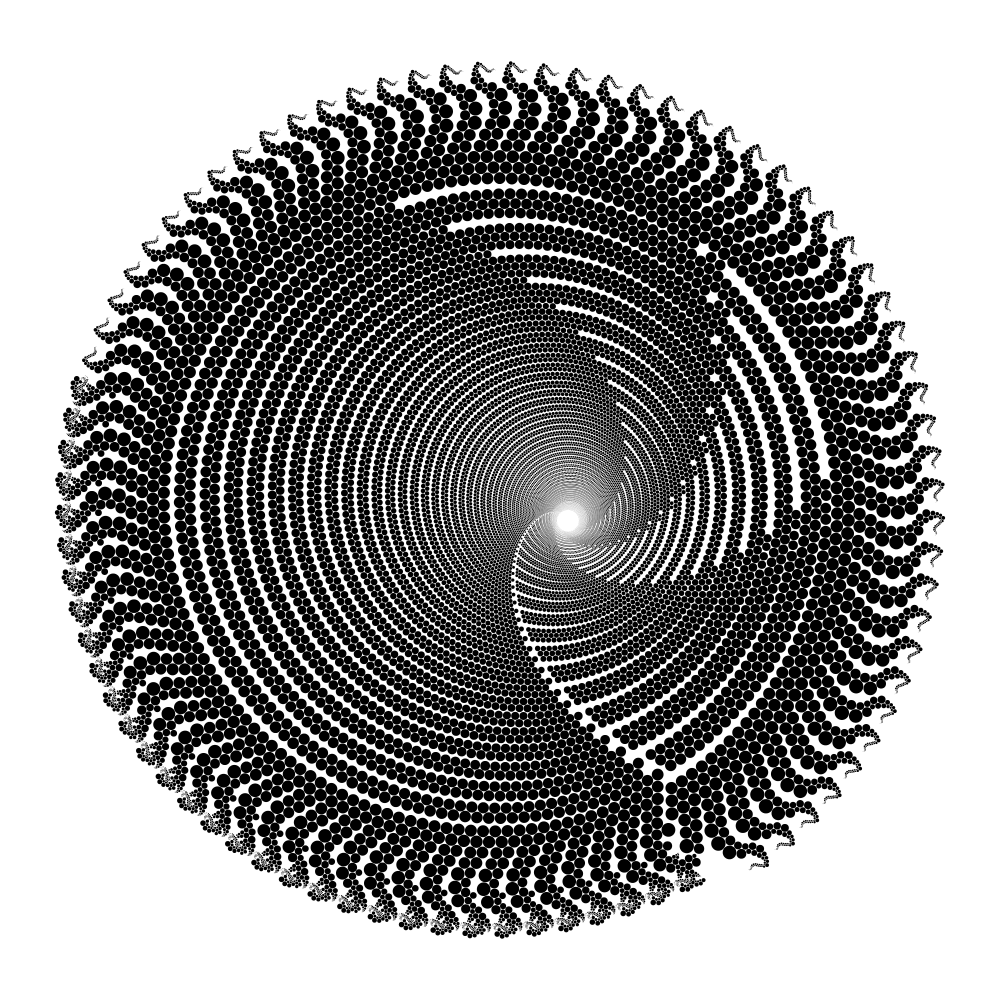

Welcome to the generative art of Julien Leonard, a french-born Singapore-resident dot artist.

Each artwork is made of hundred thousands of dots generated by a custom algorithm,designed and implemented by the artist, growing from a unique seed.

The intricacy of the patterns reminds one of the luxuriance of equatorial jungles, the complexity of microscopic organisms, or the elaborated designs of South east Asia batiks.

Only black dots, no intersection, no isolation, from 2 to 1 billion, one at a time